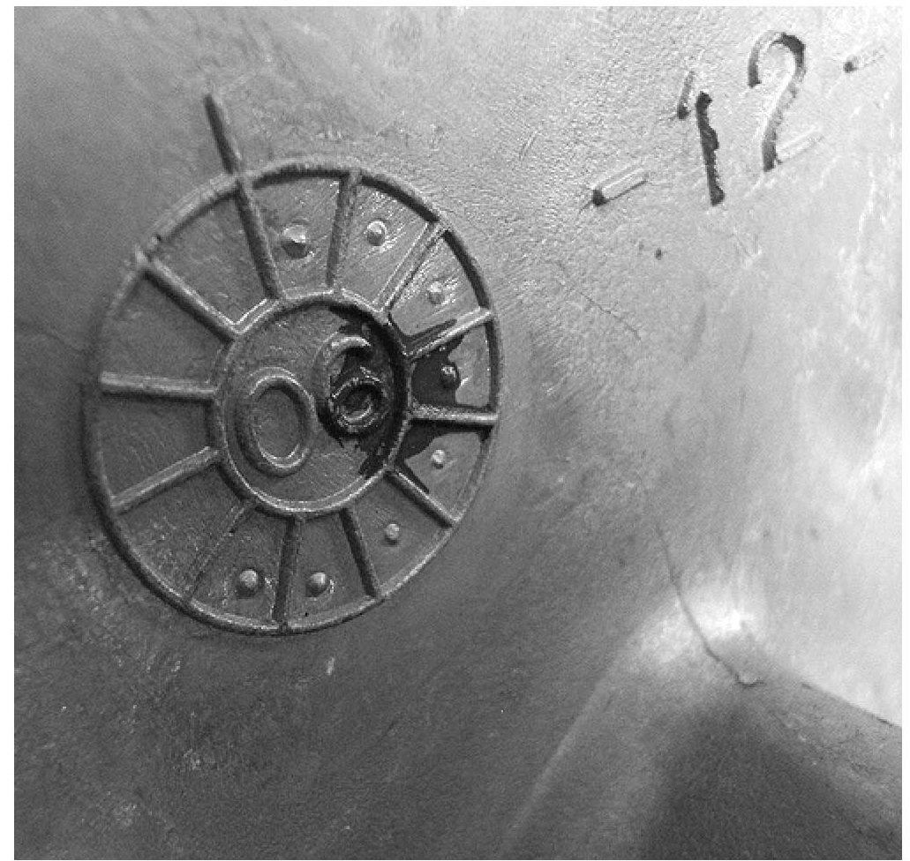

Warranty - Claims Submission
Bulletin No.: 06-00-89-054Date: November 30, 2006
WARRANTY ADMINISTRATION
Subject:
Warranty Claims Submission - Importance of GM Part Numbers and Date Coded Parts
Models:
2007 and Prior GM Passenger Cars and Light Duty Trucks
2003-2007 HUMMER H2, H3
2005-2007 Saab 9-7X
GM Part Numbers
All parts used on GM vehicles are assigned a GM part number. Additionally, most of the parts used in the manufacturing of GM vehicles are marked with GM part numbers directly on the part. This allows for easy verification of Genuine GM parts whether stocked at the warehouse, installed on a vehicle, or being returned for warranty claims. Running changes are also sometimes necessary during a model year resulting in additional part number changes mid-year.
Date Coded Parts and Identification Marks
Many of the parts used on powertrain, chassis, electrical and interior assemblies are marked and date coded in a variety of ways. You may find stickers, bar codes, embossed clock faces, number stampings and riveted tags among many other methods on the parts you possess. While many of these components are supplied to General Motors, almost all suppliers track these identifications as a method of quality assurance and containment if ever an issue arises about a specific part.
Date Code Example

The sample picture is from a 2.4L 4 cylinder front engine cover. On this part, the date code appears as a "clock" wheel.
On the first day for each month of production, the casting dye is pulled. Using a center punch, an operator manually punches another point on the date code wheel. To decode, you simply count the number of center punches, or impression, in the dial of the clock and you have the month.
The example picture has eight impressions, or center punch marks, on the wheel. The year is cast into the center of the dial or clock face. Therefore, the example is identified as being from August 2006. This date along with the part number, and many different identifiers cast into the parts, are used to track variations with multiple dies or production locations. When these marks are on the exterior surfaces when installed, they give GM dealers a powerful advantage when used for inspection purposes.
When the above information is tied to the correct VIN of the vehicle, along with a complete and detailed repair order, it becomes an effective tool to isolate parts with a given concern. This all depends on your dealership and care you take in regards to returned parts.
Warranty Claims Submittal and Accompanying Returned Parts Guidelines
It is vital that the exact part(s) replaced during a warranty repair be returned when requested. These parts must be the specific ones associated with the repair order requested and must carry the proper date codes for the production run of the vehicle or component. Substitute parts are not acceptable. This information is used during warranty part reviews and is tracked to determine possible problems with a specific production run. The more precisely that GM can isolate a production time frame that is causing customer concerns, the quicker and more effectively we can target a solution.
Warranty Debits
Parts that are returned out of date range for the specified vehicle on the repair order will first be cross-checked under the vehicle warranty system for past replacements. If a past replacement is noted the warranty data will be recorded as such and the claim will be processed. Parts returned out of date range for the vehicle repaired may be debited back to the dealer.

Disclaimer